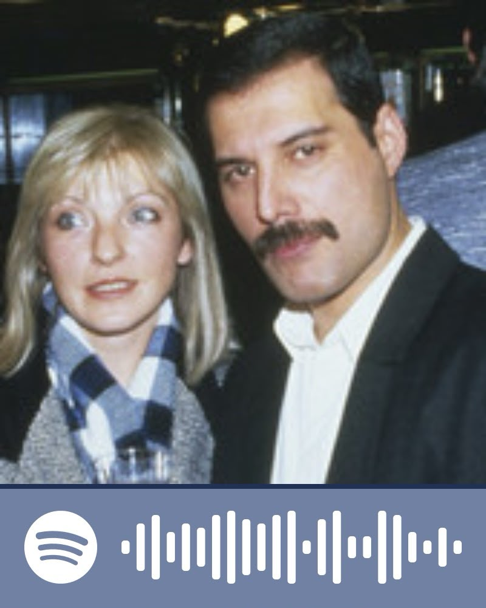

Para Isabella
Querida Isabella,
Cada día recuerdo todo lo que pasó entre nosotros, y me di cuenta de que el tiempo no borra lo profundo que alguna vez sentí por ti. No importa cuánto pase, hay algo en ti que sigue siendo parte de mi corazón y de los recuerdos más bonitos que alguna vez tuve.
A veces uno piensa que el amor termina cuando las personas ya no están en la vida del otro, pero yo sé que no siempre es así. Había algo verdadero, algo genuino, algo que hizo que cada momento contigo se sintiera especial, único y lleno de amor. Te llevo dentro de mí más de lo que quisiera admitir.
Sé que el tiempo nos separó y que las cosas cambiaron, pero no deja de doler recordar lo mucho que te amo y lo bonito que era estar cerca de ti. Te amo de una manera que ya no se puede explicar con palabras, pero sí con recuerdos, con tantos sentimientos que cada día me acompañan y me llenan de impotencia por no estar contigo, con ese vacío que no desaparece por completo. Aun así, agradezco haberte conocido y que me hayas dejado esos recuerdos tan preciosos.
Hay personas que marcan la vida de una forma que jamás se olvida, y tú eres esa persona para mí. Aunque ya no estemos juntos, quiero que sepas que te guardo con cariño, respeto y un amor que sigue siendo real, aunque ahora sea más silencioso, más doloroso y más lejano.
A veces me pregunto si alguna vez volveremos a cruzarnos en la vida, si el destino nos dará otra oportunidad de encontrarnos y de revivir lo que alguna vez tuvimos. Pero sé que la vida sigue su curso, y que debemos aceptar lo que nos toca vivir, aunque duela. Aun así, siempre te llevaré en mi corazón, y recordaré con cariño cada instante que compartimos.
Para mi, eres como esa estrella preciosa que siempre veo brillar en el cielo aunque se que nunca la alcanzare y aunque no pueda tocarla, siempre me recordará que hay cosas hermosas en la vida que valen la pena y esa cosa eres tu.
Siempre seras mi Mary Austin, mi amor eterno, mi inspiración y mi recuerdo más bonito. Aunque la vida nos haya separado, siempre te llevaré en mi corazón y en mis pensamientos. Gracias por haber sido parte de mi vida y por haberme enseñado lo que es amar de verdad.
Mi vida sin ti se siente vacia sin sentido y quisiera no vivirla si tu no estas en ella, pero recuerdo que tu eres esa luz en medio de la oscuridad.
He sufrido muchas noches eternas donde te he extrañado intensamente, donde he llorado por tu ausencia.
Y lo más difícil de todo es admitirlo sufro mucho porque ya no estás, porque te extraño en cada momento de mi día, porque todavía hay un vacío enorme donde alguna vez estuvo tu presencia. No es fácil seguir adelante sabiendo que una parte de mí sigue esperándote, aunque sepa que ya no hay vuelta atrás. Te extraño como si fueras una parte de mi alma que se fue y dejó un hueco imposible de llenar.
Sé que la vida tiene su propia manera de seguir adelante, y que debemos aceptar las circunstancias que se nos presentan. Pero no puedo negar que mi corazón todavía anhela por ti, y que los recuerdos que compartimos siempre serán parte de mí. Espero que donde sea que estés, seas feliz, y que la vida te haya tratado bien. Siempre llevaré un pedazo de ti en mi corazón.
Pd: Esto no es un detalle para enamorarte ni mucho menos pero es una forma de decirte lo mucho que te amo y que siempre desde mi silencio te llevo en mi corazón. si quizas hay una personita que amas y te ama explicale que solo soy un bastardo del pasado que te ama y que no tiene mucha importancia, perdoname si todo esto quiza te incomodo pero es la unica forma que encontre para expresarte todo lo que siento por ti.
Gracias por existir en mi historia, por dejarme vivir una parte tan linda de mí contigo, y por ser ese recuerdo que aún me hace sentir demasiado mucho cuando pienso en ti.
Y por si quieres escuchar algo de lo que me recuerda a ti, ahí te dejé una playlist en Spotify con canciones que me recuerdan a ti en cada momento en el que te pienso :P.
